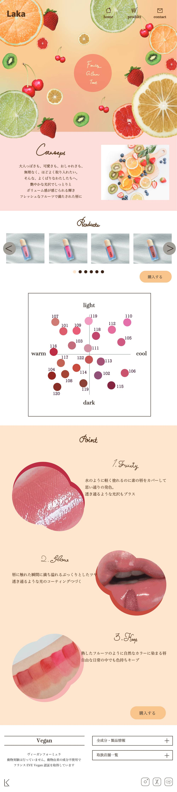

Home
About
Products

コスメLP
フルーティーな色味・艶感・香りを特徴とする既存リップ商品のLPを、10代の若年層をターゲットにリデザインしました。 瑞々しさや透明感を視覚的に伝えるため、フルーツモチーフと明るく軽やかな配色を採用しています。 世界観訴求からカラー展開、購入導線までの流れを意識し、直感的に商品の魅力が伝わる構成を目指しました。
使用ツール：Adobe Illustrator、Adobe Photoshop